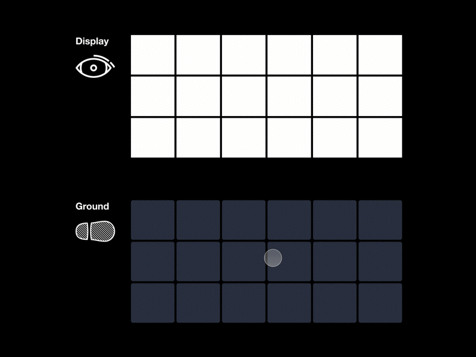
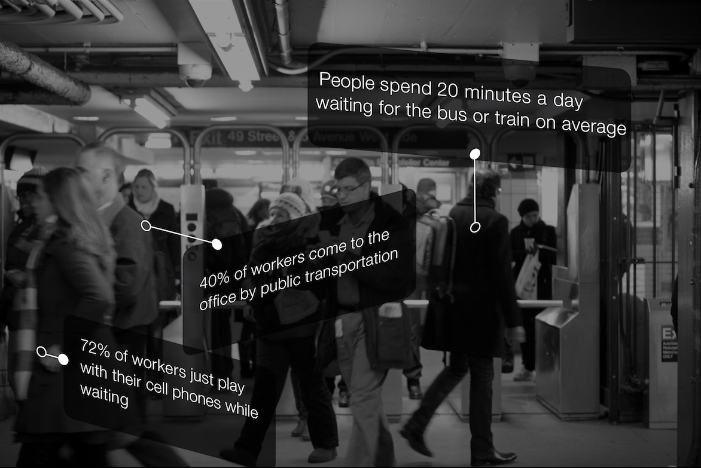
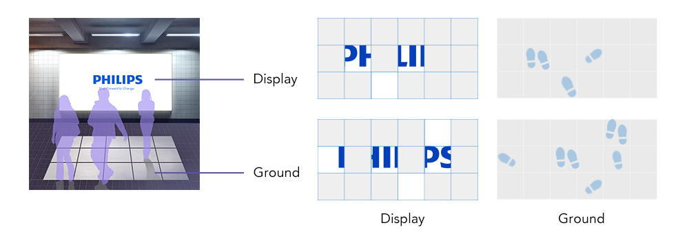
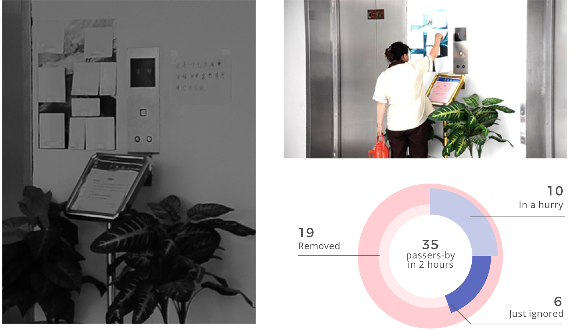
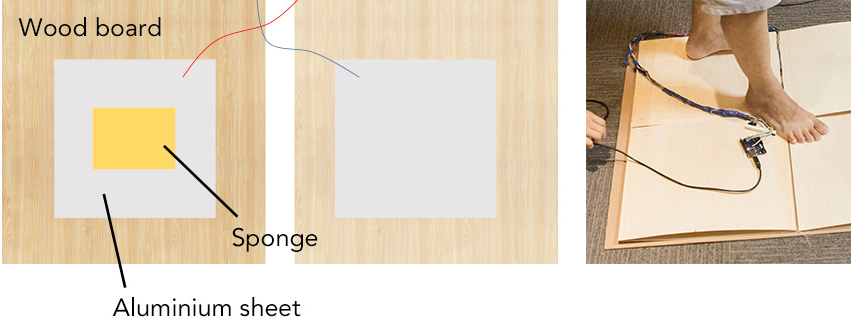
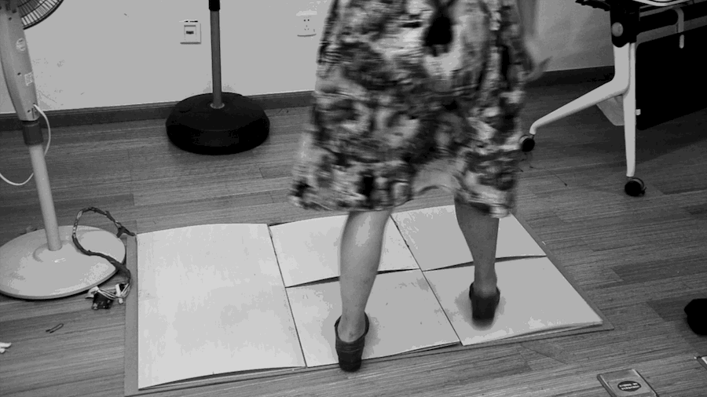
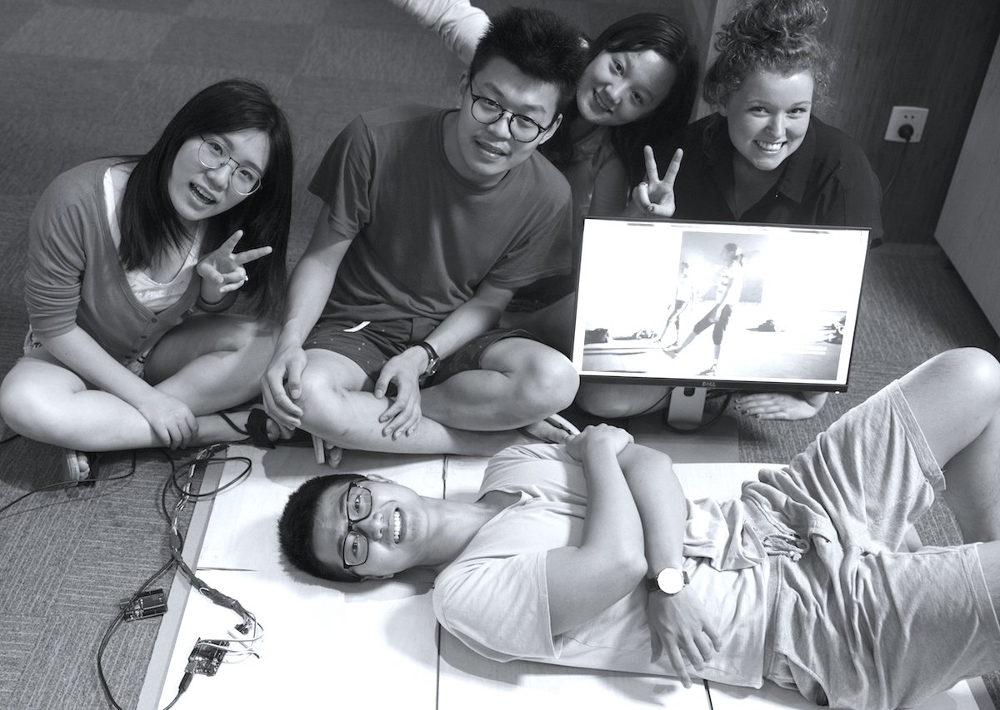

5 days, July 2015 @ Business Innovation Design Workshop.
During the workshop, as the team leader, I led the concept creation and managed the progress of project. Every member participated in the prototyping. Responsible for presentations, I made all the videos and designed slides and visuals to showcase the work every day.
Arduino, Processing, Physical Prototyping, Evaluation
We won the first place out of 6 teams in the pitch in front of folks from Philips Design!
Regardless of your age or size, physical activity has been shown to add years to your life, and life to your years. Believe it or not, the benefits of physical activity are not restricted to exercise performed in the gym. In fact, one of the easiest ways to improve your health may be through increasing the amount of low-intensity physical activity you perform throughout the day.
Actro is an interactive installation placed in public to change people's behavior towards an active style. A digital display is divided into several parts. Each section corresponds to a square on the ground. After people step on the squares, corresponding sections of the display will light up. To see the whole picture of the screen, people have to collaborate, move and step, and therefore, exercise.
People who sit more than 11 hours a day have a 40% higher risk of dying in the next three years than people who sit less than four hours a day. This is terrifying, right? But it is true according to Archives of Internal Medicine.
How to design for sedentary people and increase their physial activity? More specifically, the amount of low-intensity physical activity throughout the day?
A typical day of a worker could be easily divided into three segments at home, in the office, in commute.
After brainstorming 20+ ideas and develope value proposition for each of them. We decided to put our focus on the commute since it has a wider audience and more space for creative designs.
The idea came to our mind: Could we design something which attracts people to move during their boring waiting hours?
Among the several ideas, we picked the most promising one. The idea was simple, people have to move so as to reveal the content on the display.
But we are unsure, is curiosity enough to act as the incentive?
We ran a little experiment to see whether CURIOSITY can drive people to move. We hung a poster with several pieces covered near the entrance of the elevator to see if passers-by are curious enough to remove the lid when they are bored waiting.
Yes, they are!
We also changed our design a little bit by selecting appealing videos, distributing digital coupons when all the sections are lit up, and always revealing some sections as baits.
We only had less than a day to prototype the design, which made it impossible to order the necessary sensors online. I came up with this idea using the sponge and unexpectedly, it turned out to work! The sponge is compressed when stepped on so that aluminum sheets conducted electricity and therefore, sending signals.
For prototype, we only made six sections. Actro was controlled by Arduino connected with Processing.
Bringing Actro out for evaluation was exciting. We ran two tests in total. One was at the canteen, where there were student, teachers, and residents around the campus, the other one was at a bus station.
The feedback from the evaluation were overal positive.
People are attracted by the following factors ranked in percerntage: coupons, interesting interactions, video contens, and health. We could say that our design was successful to reach its goal.
And we unexpectedly found that, to light up all the sections on the display, people have to collaborate, which also raise the social interactions between people.
Culturally, Chinese tend to be shy when exposed in social contexts. Caroline, one of my teammates who was from Netherlands, was suprised to see that the crowd first observed others for a long time before they joined. From this finding, we learned that we have to adapt the design into different social contexts. To help Chinese people overcome their shyness, a good solution could be adding more incentives.
This workshop was named after "Business Innovation Design". Therefore, when we followed a user-centered and evidence-based design process, we considered the business value that Actro could yield at the same time. That is to say, to find a buyer.
We found a good point - ad. Advertisements could be delivered in this newly-designed form. In our ideal blueprint, companies have healthier employees, commercial ads get higher exposure rate, government promote the use of public transportation.
At the end of this five-day workshop, we presented in front of folks from Philips Design. Bravo! Our pitch won the first place among the six groups.